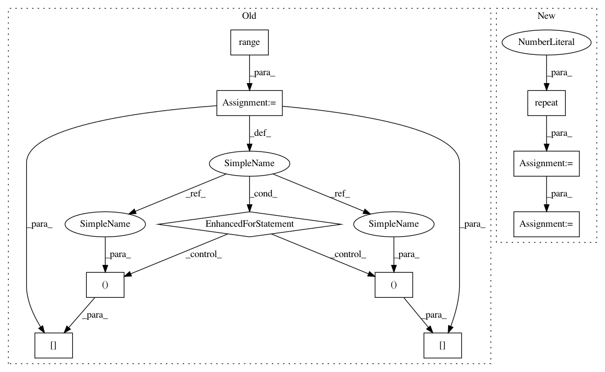

9b664bd7cd8dbb9657626166ba61887ed06774d7,gpytorch/utils/toeplitz.py,,index_coef_to_sparse,#Any#Any#Any#,6
Before Change
num_target_points, num_coefficients = value_matrix.size()
index_list = [[], []]
value_list = []
for i in range(num_target_points):
for j in range(num_coefficients):
if value_matrix[i, j] == 0:
continue
index_list[0].append(i)
index_list[1].append(index_matrix[i, j])
value_list.append(value_matrix[i, j])
index_tensor = torch.LongTensor(index_list)
value_tensor = torch.FloatTensor(value_list)
res = torch.sparse.FloatTensor(index_tensor, value_tensor, torch.Size([num_target_points, row_length]))
return res
After Change
num_target_points, num_coefficients = value_matrix.size()
row_tensor = torch.arange(0, num_target_points).unsqueeze(1)
row_tensor = row_tensor.repeat(1, num_coefficients).type_as(index_matrix)
index_tensor = torch.cat([row_tensor.view(1, -1), index_matrix.view(1, -1)], 0)
value_tensor = value_matrix.view(-1)
nonzero_indices = value_tensor.nonzero()
if nonzero_indices.storage():
nonzero_indices.squeeze_()
index_tensor = index_tensor.index_select(1, nonzero_indices)
value_tensor = value_tensor.index_select(0, nonzero_indices)
else:
index_tensor = index_tensor.resize_(2, 1).zero_()
value_tensor = value_tensor.resize_(1).zero_()
In pattern: SUPERPATTERN
Frequency: 3
Non-data size: 10
Instances
Project Name: cornellius-gp/gpytorch
Commit Name: 9b664bd7cd8dbb9657626166ba61887ed06774d7
Time: 2017-09-13
Author: gpleiss@gmail.com
File Name: gpytorch/utils/toeplitz.py
Class Name:
Method Name: index_coef_to_sparse
Project Name: cornellius-gp/gpytorch
Commit Name: 9b664bd7cd8dbb9657626166ba61887ed06774d7
Time: 2017-09-13
Author: gpleiss@gmail.com
File Name: gpytorch/utils/toeplitz.py
Class Name:
Method Name: index_coef_to_sparse
Project Name: batra-mlp-lab/visdial-challenge-starter-pytorch
Commit Name: 67addeaef37856340f2d220af9a7cad3c4256235
Time: 2019-01-03
Author: karandesai281196@gmail.com
File Name: visdialch/decoders/disc.py
Class Name: DiscriminativeDecoder
Method Name: forward
Project Name: theislab/scanpy
Commit Name: 9e89e0a6576c8ae04ce97c296fe8fd9dc5ee419f
Time: 2017-02-13
Author: f.alex.wolf@gmx.de
File Name: scanpy/graph.py
Class Name: DataGraph
Method Name: compute_C_matrix